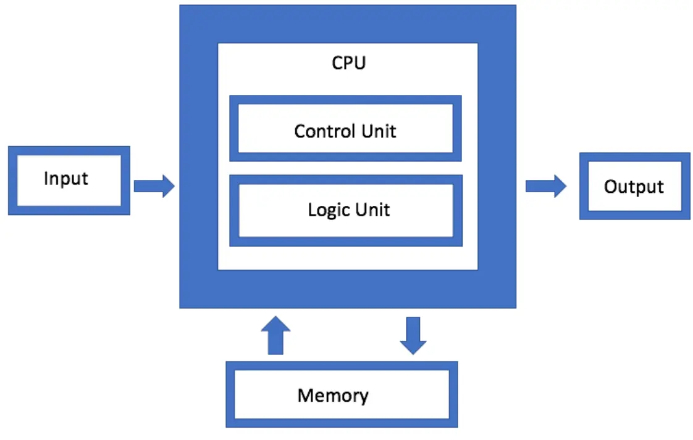

Von Neumann Architecture
The Von Neumann architecture is a model of computer design with four main parts: Memory, CPU, Input devices, and Output devices. Proposed by John von Neumann in the 1940s.
Components
- Memory: Stores both data and program instructions for the CPU.
Example: RAM stores a program for faster execution than hard disk. - CPU: Executes instructions from memory and performs calculations.
Subcomponents:- Arithmetic Logic Unit (ALU): Performs math and logical operations. Example: Adding 2 + 2
- Control Unit (CU): Manages CPU operations and directs ALU and memory. Example: CU supervises ALU steps
- Input Devices: Allow users to enter data. Examples: Keyboard, mouse, microphone
- Output Devices: Show results. Examples: Monitor, printer
-
System Bus: The main communication pathway that connects the CPU, memory, and input/output devices, allowing them to exchange information.
- Data Bus: Transfers actual data between components.
- Address Bus: Carries the memory addresses that specify where data should be read from or written to.
- Control Bus: Sends signals to components that tell them what to do.
CPU Working (Fetch, Decode, Execute, Store)
- Fetching: The CPU gets the next instruction from memory using the Program Counter (PC), which holds the address of the next instruction, and stores it in the Instruction Register (IR), which holds the current instruction being processed. Example: PC points to an “Add 2 + 2” instruction, and the IR holds it.
- Decoding: Control Unit interprets the instruction. Example: CU identifies addition operation and selects required ALU operation.
- Execution: ALU performs calculations; CU coordinates data flow. Example: ALU adds 2 + 2 → result 4.
- Storing (Write-back): Result stored in memory or sent to output. Example: Sum (4) stored in memory and displayed on monitor.
Characteristics & Advantages/Disadvantages
- Single Memory Store: Both data and instructions are stored together in the same memory. Example: Game code (the program instructions) and player scores are kept in RAM.
- Sequential Execution: Instructions are executed one after another, in a fixed order.
- Stored Program Concept: Programs are stored in memory so they can be modified, updated, or replaced.
- Advantages: Simplified design [By combining instructions and data into a single memory area, architecture is simplified.], Flexibility [easy to modify programs]
- Disadvantages: Von Neumann bottleneck [The CPU uses one memory path for both instructions and data, so it can only get one at a time, which slows down processing.], security risk [If data and instructions are stored together, a harmful instruction can change or mess with other instructions, making the system unsafe.]
Computing Systems
A computing system is a structured set of hardware and software designed to process data and perform tasks. Objectives: Solve problems, control processes, manage data, aid communication.
- Hardware: CPU, RAM, storage, input/output devices
- Software: System software (OS) & Application software
- Types: Computers, Software Systems, Computer Networks, Internet
Computer Networks as Systems
A network connects computers/devices for resource sharing, communication, and data management.
- Networking Hardware: Routers, Switches, Network cables
- Network Software: Protocols (TCP/IP), Network OS (Windows Server)
Internet as a System
The Internet is a global network for communication and data exchange.
Internet Protocols
- TCP/IP (Transmission Control Protocol / Internet Protocol): A set of rules that ensures reliable data transfer and communication over the Internet.
- UDP (User Datagram Protocol): Sends data quickly without checking for errors, often used for live streaming and online games where speed matters more than accuracy.
- FTP (File Transfer Protocol): Used to transfer files between computers over a network, such as uploading or downloading files from a web server.
- POP (Post Office Protocol): Used by email clients to retrieve messages from a mail server and download them to a local device.
Extra Insights / Expanded Knowledge
- Von Neumann Bottleneck: Single memory for instructions and data can slow CPU.
Insight: CPU caches were developed to reduce this bottleneck.
- CPU Optimization: Efficient ALU + CU improves processing speed.
Insight: Reduces energy consumption and computation time.
- Networking Protocols: TCP/IP, UDP, FTP, and POP manage data flow across networks.
Insight: Choosing the right protocol is critical for reliability and speed.
- Memory Management: Efficient RAM and storage usage improves system performance.
Insight: Virtual memory helps run large programs smoothly.
- Input/Output Devices: Proper device selection impacts user efficiency.
Insight: Fast SSDs, high-resolution monitors, and responsive keyboards improve workflow.
- System Bus: Acts as a highway connecting CPU, memory, and devices.
Insight: Wider buses allow faster data transfer and improved overall performance.
- Fetch-Decode-Execute Cycle: Central to CPU operation, ensures sequential instruction processing.
Insight: Pipeline architectures can improve CPU throughput by handling multiple instructions simultaneously.
- Stored Program Concept: Programs stored in memory can be modified dynamically.
Insight: Enables software updates without changing hardware.
- Internet Protocol Choice: Protocols like TCP/IP and UDP have different use cases.
Insight: TCP/IP ensures reliability for file transfers, while UDP is preferred for streaming and gaming due to lower latency.
- Output Devices Efficiency: Fast and accurate output devices enhance user experience.
Insight: High refresh rate monitors and low-latency printers improve response time in critical applications.
MCQs
- Which component executes instructions in a Von Neumann computer?
a) Memory
b) CPU ✅
c) Input Device
d) Output Device - Which unit performs arithmetic and logical operations?
a) Control Unit
b) ALU ✅
c) RAM
d) System Bus - What does the Program Counter (PC) do?
a) Stores data permanently
b) Holds address of next instruction ✅
c) Executes operations
d) Controls input devices - Which bus transmits control signals?
a) Data Bus
b) Address Bus
c) Control Bus ✅
d) Power Bus - Which protocol is used for reliable Internet data transfer?
a) UDP
b) FTP
c) TCP/IP ✅
d) POP
Frequently Asked Questions (FAQs)
John von Neumann, a mathematician and physicist in the 1940s.
Arithmetic Logic Unit (ALU) and Control Unit (CU).
A structured set of hardware and software designed to process data and perform tasks.
TCP/IP and UDP.
Single memory for instructions and data, limiting CPU speed.